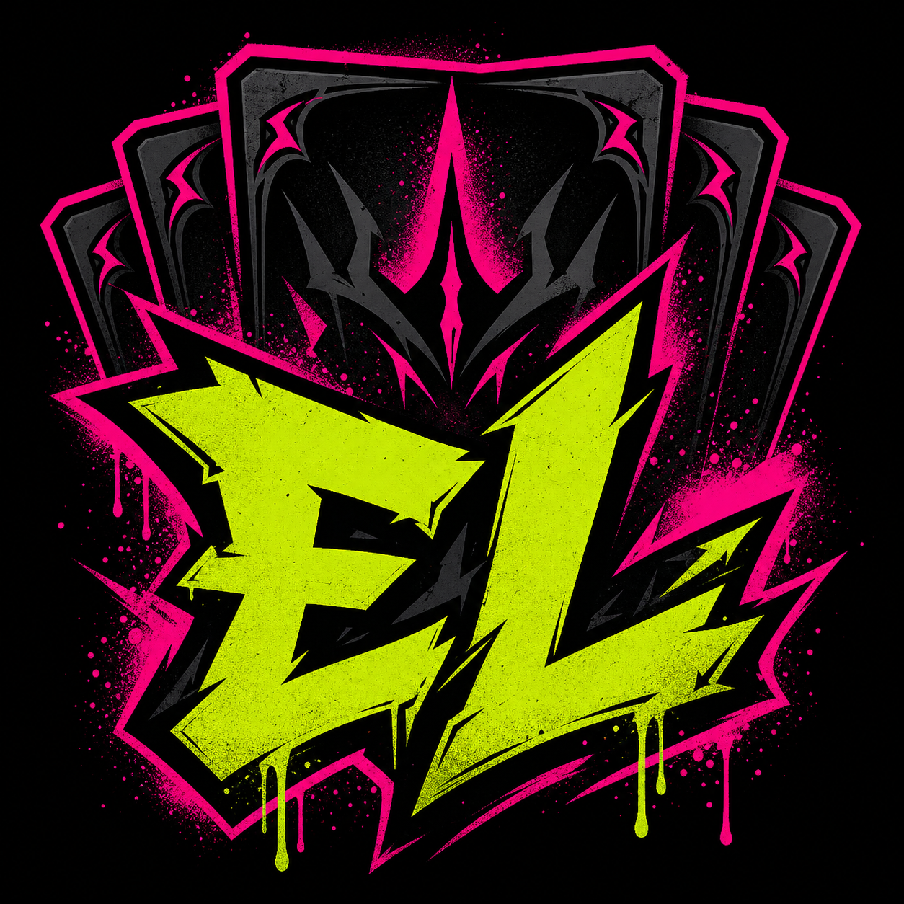
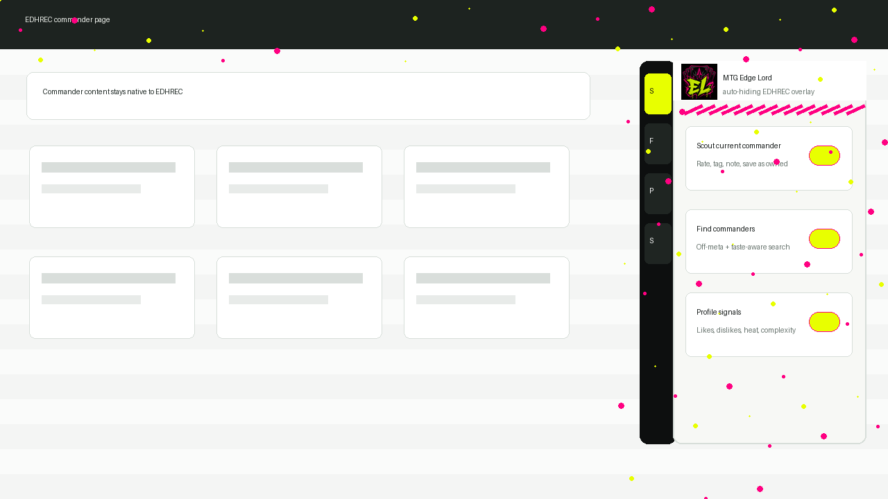

Use EDHREC, Add Edge Lord

Graffiti side-panel overlay
Chrome extension first, userscript optional.
Recommended: userscript
Install Tampermonkey or Violentmonkey, then open the userscript. It will run automatically on EDHREC pages.
Optional: Chrome extension
Clone or download this repo, then load the repo folder as an unpacked Chrome extension. The same overlay runs by default on EDHREC.
What It Adds
Auto-hide side rail
Scout, Find, Profile, and Saved panels stay tucked on the right side until hover, focus, or pin.
Commander ratings
Rate commanders 1-5 stars, set power, complexity, table heat, speed, and play pattern directly on EDHREC commander pages.
Off-meta finder
Load EDHREC ranked commanders inside the overlay, then search by rank, deck count, profile fit, taste match, and off-meta score.
Profile-aware badges
Owned and saved commanders are marked beside commander links on EDHREC pages.
Overlay Preview

Why It Needs Installation
A GitHub Pages site cannot automatically change edhrec.com because browsers isolate websites by origin. To make EDHREC itself gain the overlay by default, install the userscript or load the unpacked extension. After that, EDHREC remains the GUI and Edge Lord only adds the hidden side panels.